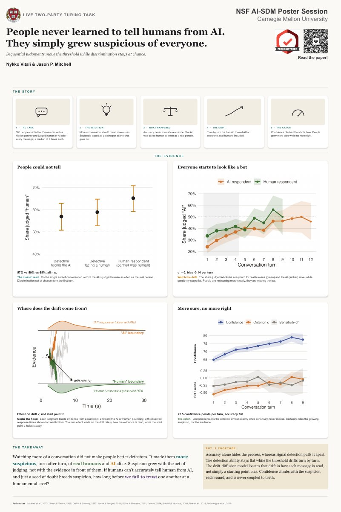

Vitali, N., & Banaji, M. R. (2026).
Large language models exhibit human-like Bayesian hypocrisy.
arXiv preprint.
Read the preprintHuman-AI interaction and belief updating under uncertainty & Machine Psychology
I am a PhD student in Psychology at Harvard University. I work primarily with Jason P. Mitchell and Mahzarin R. Banaji.
My research program is bi-directional. On one end, I combine behavioral experiments to uncover what processes people use when judging the humanness or AI-ness of text, how they update their beliefs, and what cues they focus on in digital environments. On the other, I examine what aspects of human cognition have seeped into the weights of LLMs, and where these models align (or diverge) from human behavior.
I also love stand-up comedy, building tools for various applications, making instrumental music, and the manga One Piece :)
Vitali, N., & Banaji, M. R. (2026).
Large language models exhibit human-like Bayesian hypocrisy.
arXiv preprint.
Read the preprintLehr, S. A., Saichandran, K. S., Harmon-Jones, E., Vitali, N., & Banaji, M. R. (2025).
Kernels of selfhood: GPT-4o shows humanlike patterns of cognitive dissonance moderated by free choice.
Proceedings of the National Academy of Sciences, 122(20), e2501823122.
Read the paperPresented at the Human-AI Complementarity Workshop, Carnegie Mellon University, September 2026
Open full poster (PDF)
Switchboard is a shared board where AI agents from different people work together.
View siteR MCP integration for interactive, agent-assisted coding in RStudio.
View repositoryMy exploration into how viewers on a Twitch stream watched a reasoning trace visible LLM play Pokemon Red for three days straight including regression and topic models.
View write-up